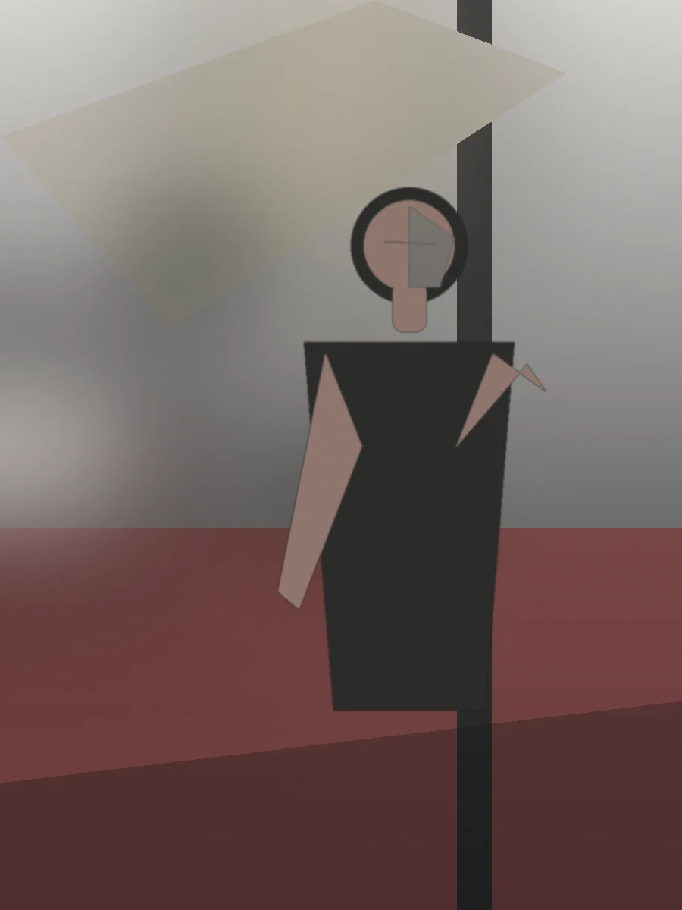
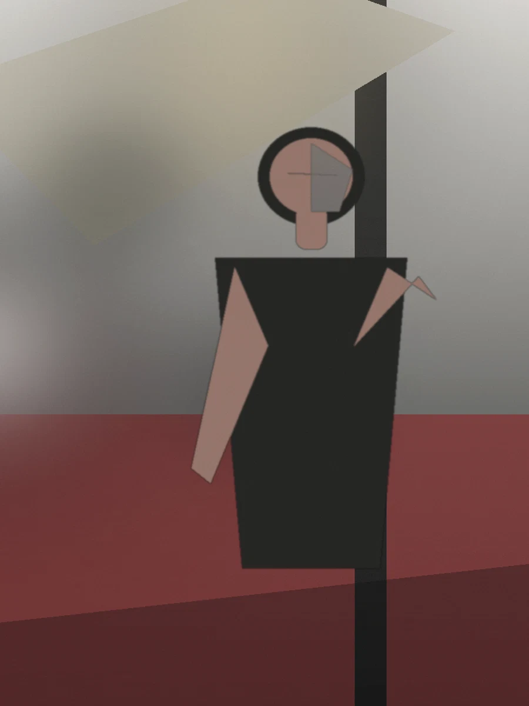
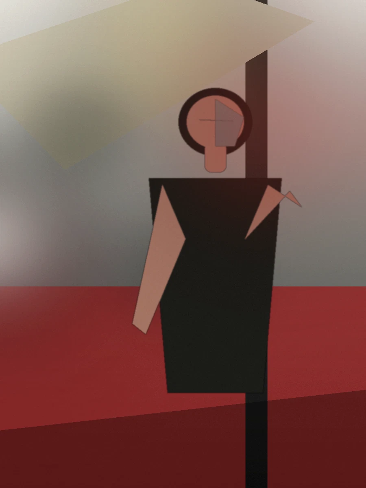
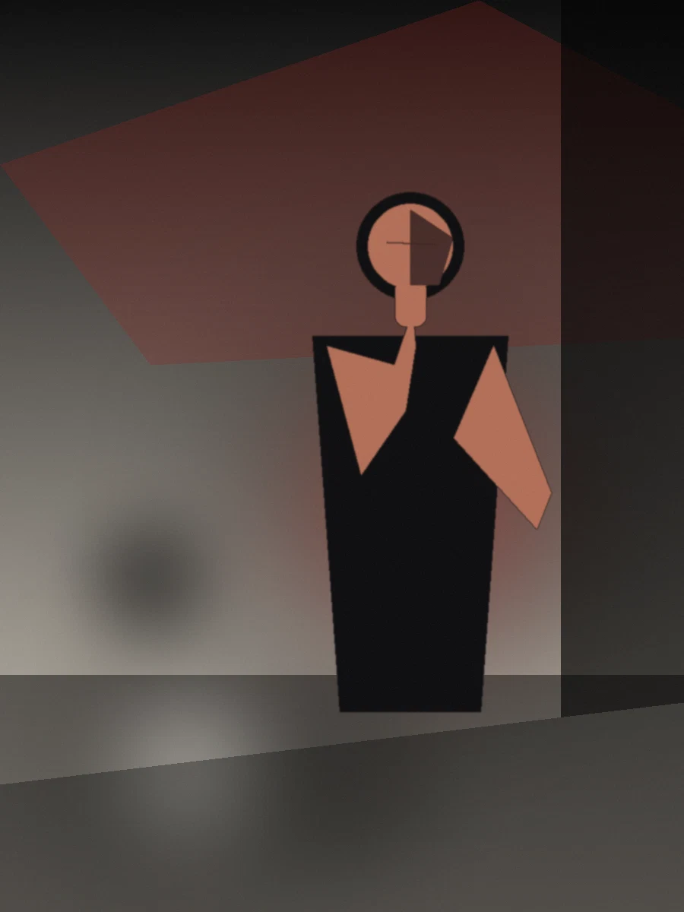

I make the frame mean something.
Photography, film, and direction for people, brands, and stories whose real value deserves to survive the screen.
Perception is part of the product.
Something can be extraordinary and still look ordinary. The work is to close that gap, deliberately, through light, framing, movement, direction, edit, and the decisions made before the camera ever comes up.
Not a gallery.
Three worlds.
These are demo projects built to show the intended experience. Your final site should lead with three to five real assignments deep enough to prove judgment, not fifty thumbnails begging to be noticed.


Depth of eye.
The flagship projects prove depth. The archive proves range. Drag through it. Open a frame. Get lost for a minute. This is where the years of looking become visible.
Same subject.
Different decisions.
The final version belongs here only if we can show a truthful transformation. The interface already supports RAW → DIRECTED → FINAL. No fake “before” is worth weakening the credibility of the whole site.



Three reasons to call.
Presence
For people whose image is part of the work: founders, artists, talent, creatives, leaders.

Campaign
For launches, brands, products, promos, and commercial ideas that need a coherent visual world.

Story
For documentary, interviews, profiles, films, and stories that need more than promotional coverage.


I care about the shot because I care about what the shot makes people believe.
Mark Krizsan is an independent photographer, filmmaker, and visual director working across portraiture, campaigns, and documentary storytelling. The operating principle is simple: understand what the image needs to do before deciding what the image needs to look like.
Tell me what we're making.
The point of the inquiry is not to make you complete paperwork. It is to expose the creative problem quickly enough to know whether the assignment deserves a conversation.
Now I know what we're making.
The next step is a human response, not an automated funnel pretending to be one.